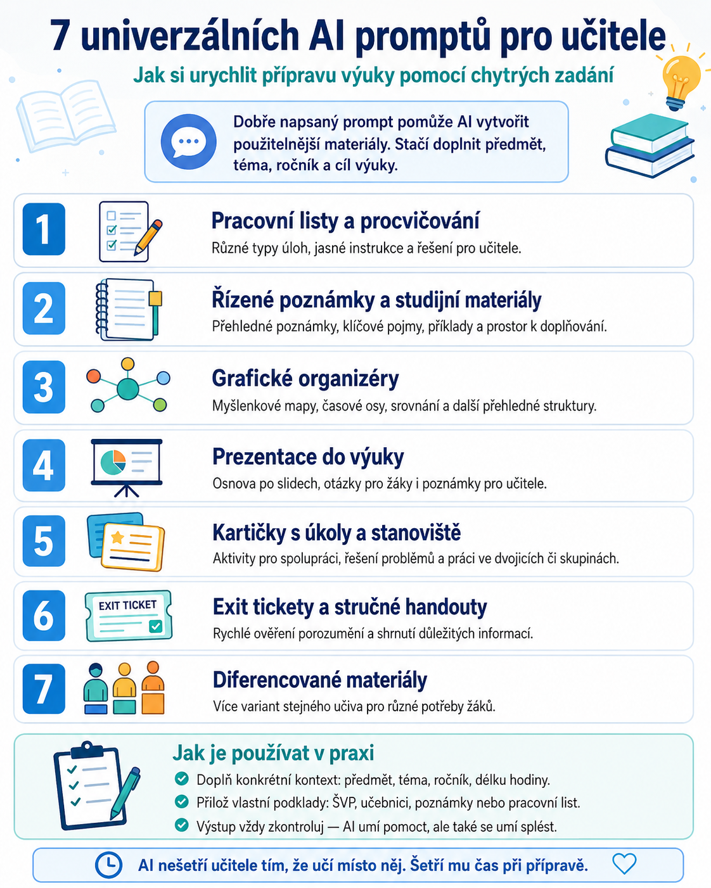

7 univerzálních AI promptů: rychlejší příprava výuky
Jak pomocí chytrých zadání připravit pracovní listy, studijní materiály, prezentace, aktivity i diferencované varianty pro žáky.
7 promptůChatGPTGeminiClaude
01
Doplňte kontextPředmět, téma, ročník a cíl výuky
02
Vyberte výstupMateriál, aktivitu, prezentaci nebo ověření
03
Nechte AI navrhovatUpravitelné šablony pro ChatGPT, Gemini i Claude
04
Zkontrolujte výsledekAI pomáhá, ale učitel rozhoduje
11 Praktické návody pro AI ve výuce
7 univerzálních AI promptů, které učiteli výrazně urychlí přípravu výuky
Sedm upravitelných šablon pro ChatGPT, Gemini, Claude i další AI nástroje. Stačí doplnit předmět, téma, ročník a cíl výuky.
29. srpna 20267 promptůChatGPT · Gemini · Claude
Umělá inteligence dokáže při přípravě hodin ušetřit opravdu hodně času — ale jen tehdy, když jí zadáme dostatečně přesný úkol.
Jednověté zadání typu „udělej pracovní list“ sice nějaký výsledek vytvoří, ale často skončíme u materiálu, který musíme z poloviny předělat.
Mnohem lépe fungují prompty, které AI řeknou nejen co má vytvořit, ale také pro koho, v jaké obtížnosti, k jakému cíli a v jaké podobě.
Níže najdete sedm univerzálních promptů, které lze používat v ChatGPT, Gemini, Claude i dalších AI nástrojích. Stačí doplnit údaje v hranatých závorkách.
Prompty pokrývají téměř celý běžný učitelský „výrobní program“: pracovní listy, poznámky, grafické organizéry, prezentace, stanoviště, exit tickety i diferencované materiály.

Pomůcka pro učitele: sedm typů materiálů a základní pravidla pro práci s AI prompty.
1. Pracovní listy a procvičovací aktivity
Pracovní list patří k nejčastějším materiálům, které učitel s AI vytváří. Tento prompt je užitečný hlavně proto, že AI nenutí vytvořit pouze několik náhodných otázek, ale požaduje různé typy úloh, postupné zvyšování obtížnosti a řešení pro učitele.
Prompt
Vystupuj jako zkušený pedagog a didaktik. Vytvoř komplexní pracovní list a sadu procvičovacích aktivit pro předmět [předmět] na téma [téma] pro žáky [ročník / věková skupina].
Obsah přizpůsob stanoveným vzdělávacím cílům a případně také příslušným kurikulárním požadavkům.
Zařaď vyváženou kombinaci různých typů úloh, například otázky s výběrem odpovědi, přiřazování, doplňování, krátké otevřené odpovědi, řešení problémových situací, úlohy rozvíjející kritické myšlení a praktické aplikační úlohy.
Aktivity uspořádej od jednodušších k náročnějším. U každé části uveď jasné instrukce.
Připrav také kompletní řešení pro učitele včetně stručného vysvětlení správných odpovědí.
Navrhni možnosti diferenciace pro žáky s různou úrovní schopností a různými vzdělávacími potřebami.
Pracovní list musí být přehledný, vizuálně dobře uspořádaný, zajímavý pro žáky a připravený k okamžitému použití ve výuce. Měl by být vhodný pro práci v hodině, domácí úkol, samostatné procvičování nebo hodnocení.
Kdy se hodí
Použijte jej například před novým tématem, při opakování, jako domácí práci nebo jako základ krátkého testu.
2. Řízené poznámky a studijní materiály
Ne každý žák si dokáže během výkladu vytvořit kvalitní poznámky. Zvlášť užitečné mohou být takzvané řízené poznámky, kde žák nedostává hotový text, ale doplňuje klíčové informace během výuky.
Prompt
Vystupuj jako zkušený pedagog a didaktik. Vytvoř komplexní řízené poznámky a studijní materiál pro předmět [předmět] na téma [téma] pro žáky [ročník / věková skupina].
Obsah přizpůsob stanoveným vzdělávacím cílům a případně také kurikulárním požadavkům.
Materiál rozděl do přehledných částí s nadpisy a podnadpisy.
Zahrň hlavní pojmy a myšlenky, důležitou slovní zásobu, definice, vzorce nebo pracovní postupy, pokud jsou pro dané téma relevantní, vyřešené příklady, návrhy diagramů, schémat nebo jiných vizuálních prvků a stručná shrnutí jednotlivých částí.
Do řízených poznámek vlož vhodně zvolená prázdná místa, otázky, tabulky nebo grafické prvky, které budou žáci během výuky doplňovat.
Na závěr vytvoř kontrolní seznam pro opakování, otázky k zopakování učiva a případně slovníček klíčových pojmů.
Výsledný materiál musí být vizuálně přehledný, zajímavý, připravený pro použití ve výuce a vhodný jak pro společnou práci v hodině, tak pro opakování a samostatné studium.
Kdy se hodí
Výborně funguje při výkladu nového učiva nebo u témat, kde mají žáci problém rozlišit, které informace jsou opravdu důležité.
3. Grafické organizéry
Grafické organizéry pomáhají žákům informace nejen přečíst, ale také uspořádat a pochopit jejich vztahy.
AI může podle tématu sama navrhnout, zda bude vhodnější myšlenková mapa, Vennův diagram, časová osa nebo třeba schéma příčina–následek.
Prompt
Vystupuj jako zkušený pedagog a didaktik. Vytvoř sadu grafických organizérů připravených k použití ve výuce pro předmět [předmět], téma [téma] a žáky [ročník / věková skupina].
Organizéry přizpůsob vzdělávacím cílům a případně příslušným kurikulárním požadavkům.
Vyber takové typy grafických organizérů, které se pro dané téma hodí nejlépe. Může jít například o pojmové mapy, myšlenkové mapy, vývojové diagramy, Vennovy diagramy, srovnávací tabulky, časové osy, diagramy příčina–následek, sekvenční schémata, KWL tabulky, Frayerův model nebo schémata pro řešení problémů.
Pro každý organizér připrav:
kompletně vyplněnou verzi pro učitele,
prázdnou verzi pro žáky,
jasný návod k použití,
návrhy diferenciace pro žáky s různými schopnostmi a vzdělávacími potřebami.
Organizéry musí být vizuálně přehledné, jednoduché na používání a navržené tak, aby podporovaly kritické myšlení, smysluplné učení a hlubší pochopení učiva.
4. Prezentace připravená do hodiny
AI lze využít nejen k vytvoření textu prezentace. Dobře napsaný prompt jí může zadat také strukturu jednotlivých snímků, otázky pro žáky, kontrolu porozumění i poznámky pro učitele.
Prompt
Vystupuj jako zkušený pedagog a didaktik. Vytvoř profesionální prezentaci připravenou k použití ve výuce pro předmět [předmět] na téma [téma] pro žáky [ročník / věková skupina].
Prezentaci přizpůsob stanoveným vzdělávacím cílům a případně kurikulárním požadavkům.
Vytvoř logickou osnovu prezentace snímek po snímku.
Prezentace by měla obsahovat titulní snímek, vzdělávací cíle, klíčové pojmy, srozumitelné vysvětlení učiva, vhodné příklady, návrhy diagramů, grafů nebo obrázků, interaktivní otázky k diskusi, průběžné ověřování porozumění, shrnutí a závěrečné otázky k opakování.
Ke každému snímku vytvoř podrobné poznámky pro učitele.
Přidej doporučení, jak během prezentace aktivně zapojit žáky, a návrhy vhodných animací nebo multimediálních prvků tam, kde dávají smysl.
Prezentace musí být vizuálně atraktivní, snadno sledovatelná, přiměřená věku žáků a navržená tak, aby podporovala aktivní učení a skutečné porozumění učivu.
Tip
AI nemusí prezentaci pouze „napsat“. Můžete ji také požádat, aby ke každému snímku uvedla:
Výuková stanoviště jsou skvělá, ale jejich příprava je časově náročná. Musíte vymyslet několik různých aktivit, instrukce, pomůcky, řešení i organizaci práce.
Právě tady může AI odvést pořádný kus práce.
Prompt
Vystupuj jako zkušený pedagog a didaktik. Vytvoř sadu [počet] kartiček s úkoly a výukových stanovišť pro předmět [předmět] na téma [téma] pro žáky [ročník / věková skupina].
Aktivity přizpůsob stanoveným vzdělávacím cílům a případně kurikulárním požadavkům.
Navrhni různé typy úkolů podporující kritické myšlení, řešení problémů, spolupráci, kreativitu a praktické využití učiva v reálném životě.
U každé kartičky nebo stanoviště uveď:
jasné instrukce pro žáky,
pokyny pro učitele,
vzdělávací cíl,
potřebné pomůcky,
přibližnou dobu práce,
správné řešení nebo doporučenou odpověď,
případně pokyny pro střídání žáků mezi jednotlivými stanovišti.
Navrhni také možnosti diferenciace pro žáky s různými schopnostmi a vzdělávacími potřebami.
Kartičky a stanoviště musí být přehledné, zajímavé, opakovaně použitelné a vhodné pro individuální práci, práci ve dvojici nebo v malé skupině.
6. Exit tickety a stručné materiály pro žáky
Exit ticket je krátký úkol na konci hodiny. Během několika minut může učiteli ukázat, zda žáci učivo pochopili.
Nemusí jít jen o klasické „napiš tři věci, které sis zapamatoval“.
AI může připravit více variant podle konkrétního vzdělávacího cíle.
Prompt
Vystupuj jako zkušený pedagog a didaktik. Vytvoř sadu exit ticketů a pracovních materiálů pro žáky pro předmět [předmět] na téma [téma] pro žáky [ročník / věková skupina].
Materiály přizpůsob stanoveným vzdělávacím cílům a případně kurikulárním požadavkům.
Vytvoř několik různých typů exit ticketů, které umožní ověřit porozumění učivu například pomocí sebereflexe, praktické aplikace znalostí, řešení problémové situace nebo krátké otevřené odpovědi.
Současně vytvoř doprovodné materiály pro žáky, které shrnou hlavní pojmy, základní slovní zásobu, definice, vzorce nebo pracovní postupy, vyřešené příklady, diagramy nebo jiné vizuální pomůcky a praktické tipy.
Uveď jasné instrukce pro žáky, správná řešení tam, kde jsou potřeba, a doporučení pro učitele k použití materiálů ve třídě.
Materiály musí být přehledné, vizuálně dobře organizované a vhodné pro výuku, opakování, domácí přípravu nebo samostatné studium.
7. Diferencované materiály pro různé žáky
Jedna z nejzajímavějších možností využití AI ve škole je tvorba více variant stejného materiálu.
Nejde přitom o to, aby jedna skupina žáků dostala „lehké učivo“ a druhá „těžké učivo“. Ideálně zůstává stejný vzdělávací cíl, ale mění se množství podpory, struktura zadání nebo náročnost cesty k výsledku.
Prompt
Vystupuj jako zkušený pedagog a didaktik se zkušenostmi s inkluzivním vzděláváním.
Vytvoř diferencované výukové materiály pro předmět [předmět] na téma [téma] pro žáky [ročník / věková skupina].
Všechny materiály přizpůsob stejným vzdělávacím cílům a případně také kurikulárním požadavkům.
Vytvoř několik variant stejného materiálu tak, aby byly vhodné pro:
žáky, kteří mají s učivem obtíže,
žáky běžné úrovně,
pokročilé žáky,
žáky, kteří se učí vyučovací jazyk jako další jazyk,
žáky se speciálními vzdělávacími potřebami.
U všech variant zachovej stejné hlavní vzdělávací cíle.
Navrhni vhodné podpůrné strategie, úpravy a přizpůsobení, rozšiřující aktivity, doplňkové úkoly a případně vhodné asistivní technologie.
Přidej jasné pokyny pro učitele i pro žáky a doporučení k použití jednotlivých variant ve výuce.
Materiály musí být vizuálně přehledné, zajímavé, přístupné, inkluzivní a připravené k okamžitému použití.
Jak prompty používat v praxi
Největší chyba je vložit prompt do AI bez dalších informací a čekat zázrak. AI sice materiál vytvoří, ale nezná vaši třídu.
Čím více relevantního kontextu dostane, tím lepší bude výsledek.
Místo:
Vytvoř pracovní list na Evropskou unii.
je mnohem užitečnější napsat například:
Vytvoř pracovní list na téma Evropská unie pro 2. ročník střední odborné školy. Žáci mají přibližně 17 let. Hodina trvá 45 minut. Cílem je, aby dokázali vysvětlit rozdíl mezi hlavními institucemi EU a přiřadit k nim základní pravomoci.
A ještě lepší možností je přiložit vlastní podklad.
Může to být například:
tematický plán,
text učebnice,
vlastní poznámky,
prezentace,
metodický materiál,
předchozí pracovní list,
zadání z ŠVP.
Potom do promptu doplňte například:
Vycházej pouze z přiložených podkladů. Pokud nějaká informace v podkladech není, nevymýšlej ji a upozorni mě na to.
To je jednoduchá věta, ale výrazně omezuje tradiční AI disciplínu jménem „velmi sebevědomě si něco vymyslím“.
Nechte AI nejdříve navrhovat, až potom vyrábět
Velmi účinný postup je rozdělit práci do dvou kroků.
Nejprve můžete AI říct:
Zatím materiál nevytvářej. Nejprve mi navrhni jeho strukturu, typy aktivit a přibližnou časovou náročnost.
Strukturu zkontrolujete a až potom pokračujete:
Návrh schvaluji. Nyní vytvoř kompletní materiál.
U rozsáhlejších pracovních listů, testů nebo prezentací je tento postup často lepší než generování všeho jedním povelem.
AI materiál není hotový materiál
Tohle stojí za připomenutí.
I velmi dobrý prompt může vytvořit chybu, nevhodně položenou otázku, příliš obtížnou aktivitu nebo faktickou nepřesnost.
Před použitím ve výuce proto vždy zkontrolujte především:
věcnou správnost,
obtížnost,
formulaci zadání,
správné odpovědi,
časovou náročnost a
vhodnost materiálu pro konkrétní žáky.
AI může být velmi schopný pomocník při přípravě výuky. Odpovědnost za to, co nakonec dostanou žáci, ale zůstává na učiteli.
A tak je to vlastně správně.
Shrnutí
Těchto sedm promptů může vytvořit jednoduchou základní „AI knihovnu“ pro každodenní práci učitele:
pracovní list → poznámky → grafický organizér → prezentace → stanoviště → exit ticket → diferencovaná varianta.
Nemusíte pokaždé začínat od prázdného chatovacího okna. Uložte si prompty jako šablony a měňte pouze předmět, téma, ročník a vzdělávací cíle.
Právě v tom je jeden z nejpraktičtějších přínosů AI pro učitele: ne že připraví hodinu místo nás, ale že dokáže výrazně zkrátit cestu od nápadu k použitelnému materiálu.
Další návody
Navazující články pro přesnější zadání, vizuální materiály a kontrolu výstupu AI.